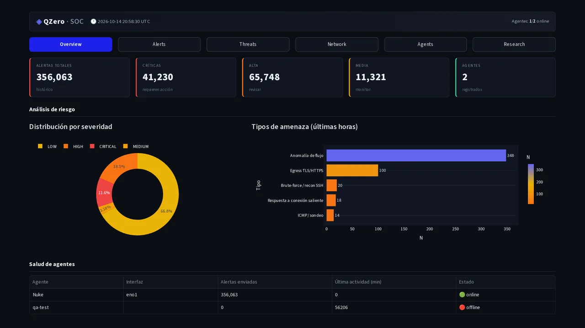
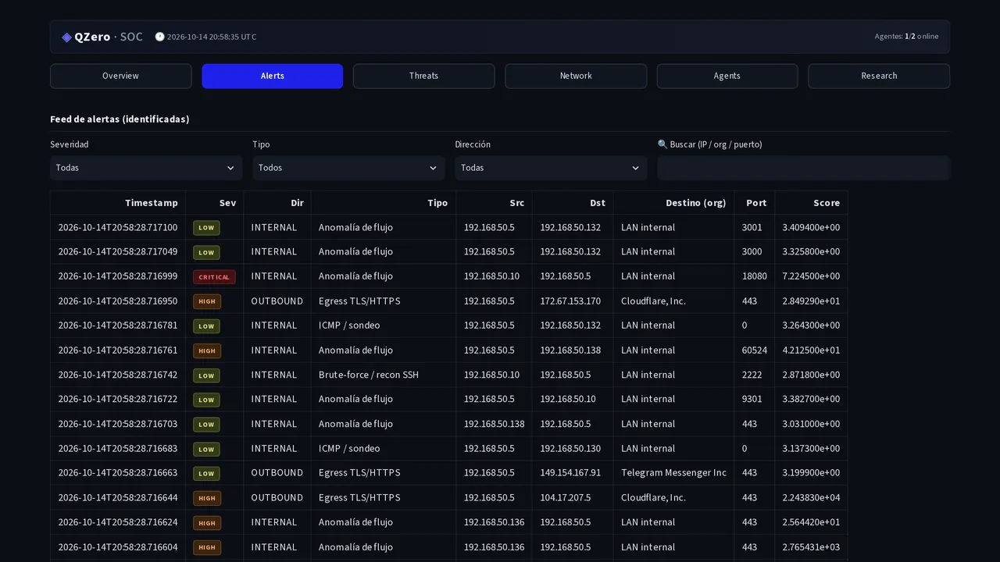
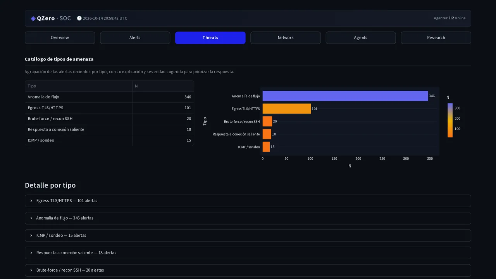
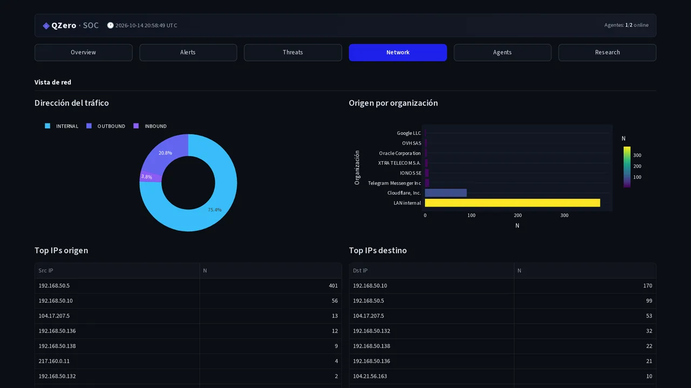
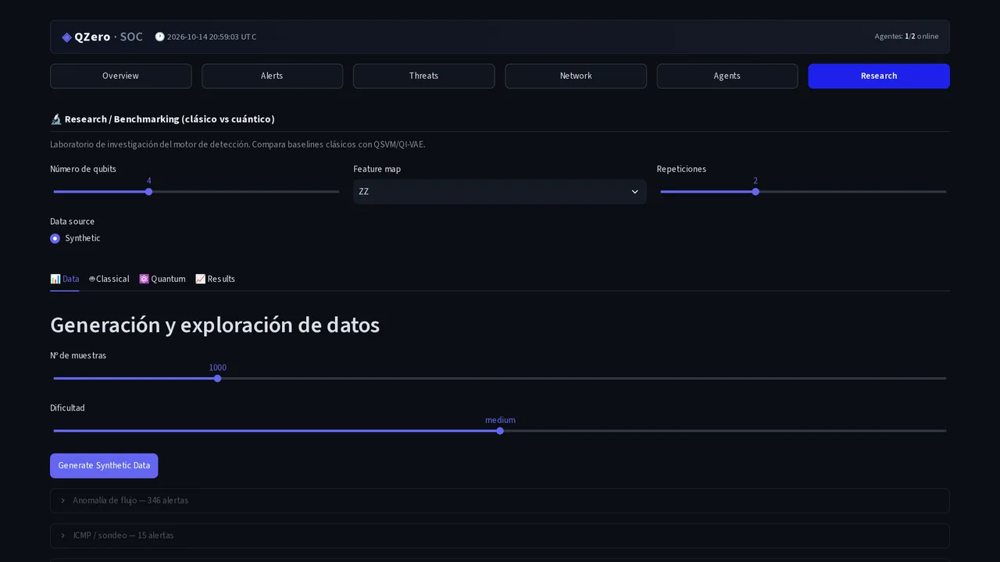
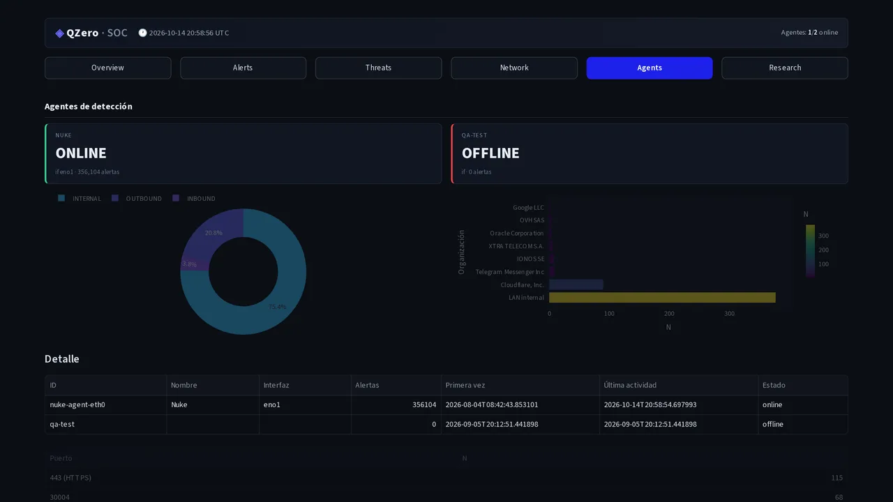

Detecta el ataqueSee the attack antes de la firma.before its signature.
QZero is an open-source, self-hosted NDR. A quantum-inspired variational autoencoder learns what normal looks like on your network and scores every flow with a continuous number, not a boolean. Zero signatures. Zero cloud.QZero es un NDR open source y autoalojado. Un autoencoder variacional inspirado en computación cuántica aprende qué es normal en tu red y puntúa cada flujo con un número continuo, no un booleano. Cero firmas. Cero nube.
Download QZero freeDescargar QZero gratis or watch it score real traffic ↓o míralo puntuar tráfico real ↓
A capture, scored live.Una captura, puntuada en directo.
Everything below is real: 2 942 flows extracted from five labeled PCAPs shipped in the repo, each scored by the actual engine (qzero-candidate, method=best). No row was hand-picked. The one part that is a demo control is the threshold — the scores are not.Todo lo de abajo es real: 2 942 flujos extraídos de cinco PCAP etiquetados que viven en el repo, cada uno puntuado por el motor real (qzero-candidate, method=best). Ninguna fila está elegida a mano. Lo único que es control de demostración es el umbral; los scores no.
| sourceorigen | destinationdestino | score | ||
|---|---|---|---|---|
| loading assets/ledger.json … | ||||
Mueve el umbral: el mismo tráfico cruza normal → medium → high. Un NDR de firmas no puede hacerlo; el score existe antes que cualquier nombre.Drag the threshold: the same traffic crosses normal → medium → high. A signature-based NDR cannot do that — the score exists before any name does.
From raw traffic to alert, in three moves.Del tráfico en bruto a la alerta, en tres pasos.
QZero has no rule database to fall back on. What it has is a pipeline you can read end to end: it listens, it scores, and only then it decides. Here is each step as what you give it and what comes back.QZero no tiene una base de reglas a la que agarrarse. Lo que tiene es un pipeline legible de principio a fin: escucha, puntúa, y solo entonces decide. Aquí tienes cada paso como lo que le das y lo que devuelve.
First, it listens.Primero, escucha.
$ qzero agent --interface eth0 --hub http://HUB:8000A lightweight agent taps the interface — or you simply hand it a PCAP. It extracts 14 features per flow in real time: duration, packet and byte counts, direction asymmetries, inter-arrival times, flags.Un agente ligero captura la interfaz, o le pasas un PCAP directamente. Extrae 14 features por flujo en tiempo real: duración, paquetes y bytes por dirección, asimetrías, tiempos entre paquetes, flags.
the 14 features the engine actually readslos 14 features que el motor lee de verdad
flow_duration · total_fwd_packets · total_bwd_packets · total_length_fwd_packets · total_length_bwd_packets · flow_bytes_per_sec · flow_packets_per_sec · fwd_packet_length_mean · bwd_packet_length_mean · fwd_iat_mean · bwd_iat_mean · fwd_psh_flags · bwd_psh_flags · fwd_urg_flags
Then, it scores.Después, puntúa.
$ qzero analyze suspicious.pcap --model-dir models/qzero-candidateA variational autoencoder trained only on normal traffic reconstructs each flow; the harder the reconstruction, the stranger the flow. A quantum-kernel SVM then separates threat from noise. The output is one continuous score per flow — you decide where normal ends, and a PostFilter silences discovery chatter (SSDP, mDNS) before you see an alert.Un autoencoder variacional entrenado solo con tráfico normal reconstruye cada flujo. Cuanto más le cuesta, más extraño es el flujo. Una SVM con kernel cuántico separa después amenaza de ruido. El resultado es un score continuo por flujo: tú decides dónde acaba lo normal. Un PostFilter silencia el ruido de descubrimiento (SSDP, mDNS) antes de que veas una alerta.
Finally, it tells you.Por último, te avisa.
$ qzero server --port 8000 # hub + REST + consoleTelegram notification, hub console, REST API. The whole chain — capture to alert — runs on your own hardware. Nothing phones home, because there is no home to phone.Notificación por Telegram, consola de hub, API REST. La cadena completa, de la captura a la alerta, corre en tu hardware. Nada llama a casa, porque no hay casa a la que llamar.
Six screens, same software.Seis pantallas, el mismo software.
The hub is not a demo skin over fake data. These are real captures from the running instance, at real size.El hub no es una piel de demostración sobre datos falsos. Estas son capturas reales de la instancia en marcha, a tamaño real.






Numbers that do not flatter us.Números que no nos favorecen.
Security tools love to quote one lucky benchmark. We would rather show you the whole bench, including the parts where the quantum kernel loses. Open source means you can re-run every number here; auditing it is the point.Las herramientas de seguridad encantan de citar un benchmark afortunado. Preferimos enseñarte el banco completo, incluidas las partes donde el kernel cuántico pierde. Open source significa que puedes volver a ejecutar cada número; auditarlo es el objetivo.
QSVM against classical svm_linear on our 5 labeled PCAPs, 2026-10-14, CV=1. The quantum kernel is not magically better, and this page will not pretend it is. The argument is elsewhere: no signatures, unsupervised, the score exists before the name.QSVM frente a svm_linear clásico en nuestros 5 PCAP etiquetados, 2026-10-14, CV=1. El kernel cuántico no es mágicamente mejor, y esta página no va a fingir que lo es. El argumento está en otro lado: sin firmas, sin supervisión, el score existe antes que el nombre.
Yes, the candidate model also flags normal.pcap at 100%. It is a retraining candidate — and that is exactly why this page shows raw scores and a threshold you control, never a friendly green "all clear".Sí, el candidato también marca el normal.pcap al 100%. Es un candidato en reentrenamiento. Por eso esta página muestra scores crudos y un umbral que controlas, nunca un verde "todo despejado" de cortesía.
Source, models, benchmarks and labeled PCAPs live in the open. Everything this page claims was produced with code you can check out today.Código, modelos, benchmarks y PCAP etiquetados viven en abierto. Todo lo que esta página afirma se produjo con código que puedes descargar hoy mismo.
Install it, and it answers back.Instálalo, y responde.
Click any command below and the console above replays its real output — stdout recorded on a real machine, not a mockup. Four commands from clone to hub.Pulsa cualquier comando de abajo y la consola repite su respuesta real: stdout grabado en una máquina real, no un simulacro. Cuatro comandos del clone al hub.
$ git clone https://github.com/thempra/qzero.git && cd qzero
$ pip install -e ".[all]"Python 3.10+, no GPU required for scoring (the quantum-kernel SVM trains on CPU).Python 3.10+, sin GPU para puntuar (la SVM con kernel cuántico entrena en CPU).
$ qzero analyze suspicious.pcap --model-dir models/qzero-candidateThe engine loads the VAE and SVM and scores every flow in the file.El motor carga el VAE y la SVM y puntúa cada flujo del archivo.
$ qzero server --port 8000Hub, REST API and console on your machine. Not convinced yet? The production hub below is this same software, watching a real network right now.Hub, API REST y consola en tu máquina. ¿Todavía no te convence? El hub de producción de abajo es este mismo software, vigilando una red real ahora mismo.
Open live console ↗Abrir consola en vivo ↗
pip install "qzero[agent]" && qzero agent --interface eth0 --hub http://HUB:8000
Put it on a network of your own and see what it finds in the first ten minutes.Ponlo en una red tuya y mira lo que encuentra en los primeros diez minutos.